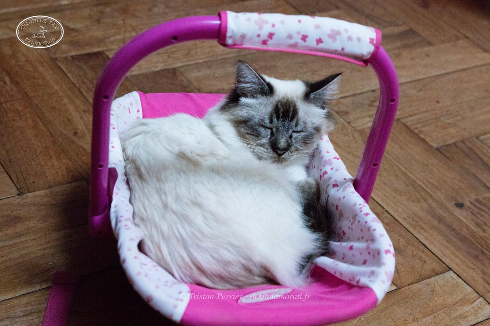

Naissance24 avril 2014
TitresGIC
Album3 photos, de octobre 2016 à octobre 2016


Palmarès
9 expositions · 16 jugements · 1 Best in Show2017
- CastetsCAGCIB
- CastetsCAGCIB
- BordeauxCAGCIB
- BordeauxCAGCIB
2016
- RomeCAGCIB
- ValladolidCAGCIB
- ValladolidCACIB
- BordeauxCACIB · NOM
- BordeauxCACIB · BIV
- ParisCACIB
- ParisCAC
2015
- Le BarpCAC · BIV · NOM BIS
- La Teste de BuchCAC
- La Teste de BuchCAC
- BordeauxEXC1
- BordeauxEXC2
EXC Excellent (classement) · CAC, CACIB, CAGCIB, CACS certificats de champion, champion international, grand champion international et suprême · CAP, CAPIB, CAGPIB, CAPS équivalents pour les chats stérilisés · BIV meilleur de la variété · NOM nommé pour le Best in Show · BIS Best in Show · BOB Best of Best, le meilleur de toute l’exposition
Photos réduites et marquées. Elles appartiennent à la Chatterie des Innamorati et ne peuvent pas être reprises dans une annonce.